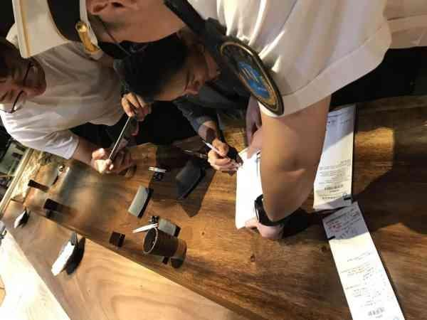
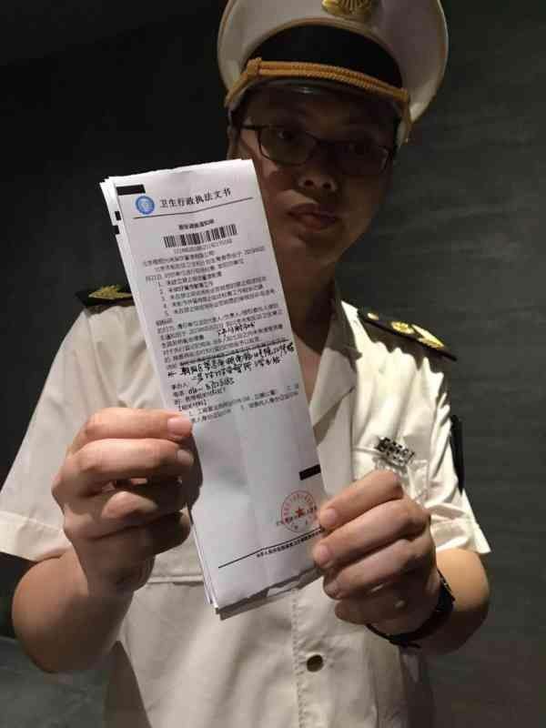

王源吸烟照曝光后引热议，现已主动联系卫生监督部门接受处罚
北京日报客户端记者了解到，今天一早，王源的经纪人主动和朝阳区卫生监督所取得联系，王源本人已到所里接受调查，同意接受处罚。北京市卫生和计划生育监督所新闻发言人王本进表示，王源作为一个公众人物，应该履行好这方面的社会责任，对于他积极承认错误、勇于改正错误的态度，我们还是给予肯定的。
昨天，有媒体爆出艺人王源5月20日在某私人聚会时频频在餐厅内抽烟。消息一经爆出立刻登上热搜，引发强烈社会反响。稍后，王源就餐厅吸烟事件发文道歉：很抱歉自己造成的不良社会影响，会承担相应的责任并接受处罚。
昨天下午3时许，北京市卫生监督所的执法人员前往涉事餐厅——位于工体东门附近的桐寿司现场调查。
朝阳区卫生和计划生育监督所三里屯监督站负责人贾红武就王源吸烟接受记者采访时表示，接到舆情监测后就来到涉事餐厅进行调查，餐厅没有张贴明确的禁烟标识，此外餐厅也没有禁烟的相关制度和宣传管理材料，以及禁止吸烟的巡查记录。
根据北京控烟条例规定，要求餐厅责令改正，餐厅负责人到卫监所接受处罚。
执法人员出示卫生行政执法文书
经调查，如果餐厅对客人吸烟未加劝阻行为属实，餐厅将被处以5000元到1万元处罚，对个人进行50元处罚。对于吸烟者，朝阳区卫监所表示，将依法约谈王源或者委托人。“公众人物在公共场合吸烟，按照法律是要进行罚款，接下来将依据行政执法程序，锁定相关证据，按法律程序进行处罚。”
来源：北京日报客户端 记者：刘欢